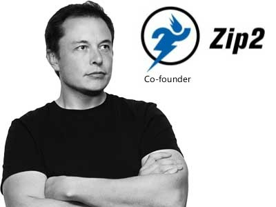

Career
Zip2
 In 1995, Musk and his brother, Kimbal, started Zip2, a web software company, with money raised from a small group of angel investors.[38] The company developed and marketed an internet city guide for the newspaper publishing industry, with maps, directions and yellow pages[59], with the vector graphics mapping and direction code being implemented by Musk in Java.[60] Musk obtained contracts with The New York Times and the Chicago Tribune,[61][62] and persuaded the board of directors to abandon plans for a merger with CitySearch.[63] Musk's attempts to become CEO were thwarted by the board.[41] Compaq acquired Zip2 for US$307 million in cash[41]:109 in February 1999.[64] Musk received US$22 million for his 7 percent share from the sale.
X.com and PayPal
In March 1999, Musk co-founded X.com, an online financial services and e-mail payment company, with US$10 million from the sale of Zip2.[63][62] One year later, the company merged with Confinity, which had a money-transfer service called PayPal.[62] The merged company focused on the PayPal service and was renamed PayPal in 2001.[66] Musk was ousted in October 2000 from his role as CEO (although he remained on the board) due to disagreements with other company executives over his desire to move PayPal's Unix-based infrastructure to Microsoft Windows.[67] In October 2002, PayPal was acquired by eBay for US$1.5 billion in stock, of which Musk received US$165 million. Before its sale, Musk, who was the company's largest shareholder, owned 11.7% of PayPal's shares.
In July 2017, Musk purchased the domain X.com from PayPal for an undisclosed amount, stating that it has sentimental value to him.
SpaceX
.jpg) In 2001, Musk conceived Mars Oasis, a project to land a miniature experimental greenhouse
on Mars, containing food crops growing on Martian regolith, in an attempt to reawaken public interest
in space exploration.[71][72] In October 2001, Musk traveled to Moscow with Jim Cantrell (an aerospace
supplies fixer), and Adeo Ressi (his best friend from college), to buy refurbished Dnepr
Intercontinental ballistic missiles (ICBMs) that could send the envisioned payloads into space. The
group met with companies such as NPO Lavochkin and Kosmotras; however, according to Cantrell, Musk was
seen as a novice and was consequently spat on by one of the Russian chief designers.[73] The group
returned to the United States empty-handed. In February 2002, the group returned to Russia to look for
three ICBMs, bringing along Mike Griffin. Griffin had worked for the CIA's venture capital arm,
In-Q-Tel, as well as NASA's Jet Propulsion Laboratory, and was just leaving Orbital Sciences, a maker
of satellites and spacecraft.The group had another meeting with Kosmotras and were offered one rocket
for US$8 million. Musk considered the price too high, and stormed out of the meeting. On the flight
back from Moscow, Musk realized that he could start a company that could build the affordable rockets
he needed.[73] According to early Tesla and SpaceX investor Steve Jurvetson,[74] Musk calculated that
the raw materials for building a rocket were only 3 percent of the sales price of a rocket at the time.
It was concluded that, in theory, by applying vertical integration and the modular approach employed
in software engineering, SpaceX could cut launch price by a factor of ten and still enjoy a 70-percent
gross margin.[75] Ultimately, Musk ended up founding SpaceX with the long-term goal of creating a true
spacefaring civilization
In 2001, Musk conceived Mars Oasis, a project to land a miniature experimental greenhouse
on Mars, containing food crops growing on Martian regolith, in an attempt to reawaken public interest
in space exploration.[71][72] In October 2001, Musk traveled to Moscow with Jim Cantrell (an aerospace
supplies fixer), and Adeo Ressi (his best friend from college), to buy refurbished Dnepr
Intercontinental ballistic missiles (ICBMs) that could send the envisioned payloads into space. The
group met with companies such as NPO Lavochkin and Kosmotras; however, according to Cantrell, Musk was
seen as a novice and was consequently spat on by one of the Russian chief designers.[73] The group
returned to the United States empty-handed. In February 2002, the group returned to Russia to look for
three ICBMs, bringing along Mike Griffin. Griffin had worked for the CIA's venture capital arm,
In-Q-Tel, as well as NASA's Jet Propulsion Laboratory, and was just leaving Orbital Sciences, a maker
of satellites and spacecraft.The group had another meeting with Kosmotras and were offered one rocket
for US$8 million. Musk considered the price too high, and stormed out of the meeting. On the flight
back from Moscow, Musk realized that he could start a company that could build the affordable rockets
he needed.[73] According to early Tesla and SpaceX investor Steve Jurvetson,[74] Musk calculated that
the raw materials for building a rocket were only 3 percent of the sales price of a rocket at the time.
It was concluded that, in theory, by applying vertical integration and the modular approach employed
in software engineering, SpaceX could cut launch price by a factor of ten and still enjoy a 70-percent
gross margin.[75] Ultimately, Musk ended up founding SpaceX with the long-term goal of creating a true
spacefaring civilization
With US$100 million of his early fortune,[77] Musk founded Space Exploration Technologies, or SpaceX, in May 2002.[78] Musk is chief executive officer (CEO) and chief technology officer (CTO) of the Hawthorne, California-based company. By 2016, Musk's private trust held 54% of SpaceX stock, equivalent to 78% of voting shares. SpaceX develops and manufactures space launch vehicles with a focus on advancing the state of rocket technology. The company's first two launch vehicles were the Falcon 1 and Falcon 9 rockets (a nod to Star Wars' Millennium Falcon), and its first spacecraft is the Dragon (a nod to Puff the Magic Dragon). [80] SpaceX designed the family of Falcon launch vehicles and the Dragon multipurpose spacecraft over a span of seven years. In September 2008, SpaceX's Falcon 1 rocket became the first privately funded liquid-fueled vehicle to put a satellite into Earth orbit.
Tesla
.jpg) Tesla, Inc. (originally Tesla Motors) was incorporated in July 2003 by Martin Eberhard and
Marc Tarpenning, who financed the company until the Series A round of funding.[109] Both men played
active roles in the company's early development prior to Elon Musk's involvement.[110] Musk led the
Series A round of investment in February 2004, joining Tesla's board of directors as its chairman.
All three, along with J. B. Straubel, were inspired by the earlier AC Propulsion tzero electric
roadster prototype.[114] Musk took an active role within the company and oversaw Roadster product
design at a detailed level, but was not deeply involved in day-to-day business operations.
Following the financial crisis in 2008 and after a series of escalating conflicts in 2007, Eberhard
was ousted from the firm.[88][116] Musk assumed leadership of the company as CEO and product architect
in 2008, positions he still holds today. As of 2019, Elon Musk is the longest tenured CEO of any
automotive manufacturer globally.
Tesla, Inc. (originally Tesla Motors) was incorporated in July 2003 by Martin Eberhard and
Marc Tarpenning, who financed the company until the Series A round of funding.[109] Both men played
active roles in the company's early development prior to Elon Musk's involvement.[110] Musk led the
Series A round of investment in February 2004, joining Tesla's board of directors as its chairman.
All three, along with J. B. Straubel, were inspired by the earlier AC Propulsion tzero electric
roadster prototype.[114] Musk took an active role within the company and oversaw Roadster product
design at a detailed level, but was not deeply involved in day-to-day business operations.
Following the financial crisis in 2008 and after a series of escalating conflicts in 2007, Eberhard
was ousted from the firm.[88][116] Musk assumed leadership of the company as CEO and product architect
in 2008, positions he still holds today. As of 2019, Elon Musk is the longest tenured CEO of any
automotive manufacturer globally.